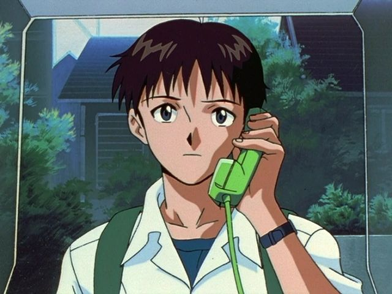
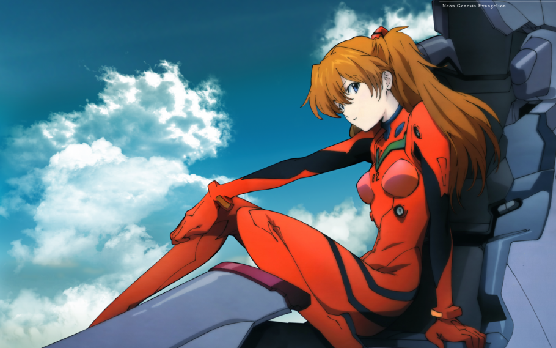
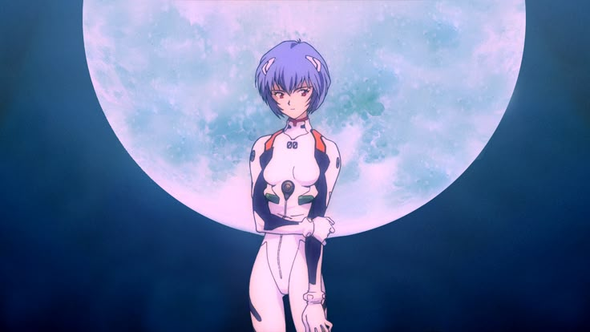
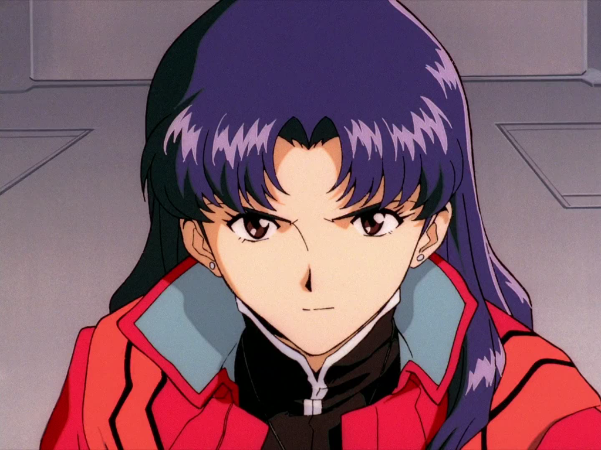
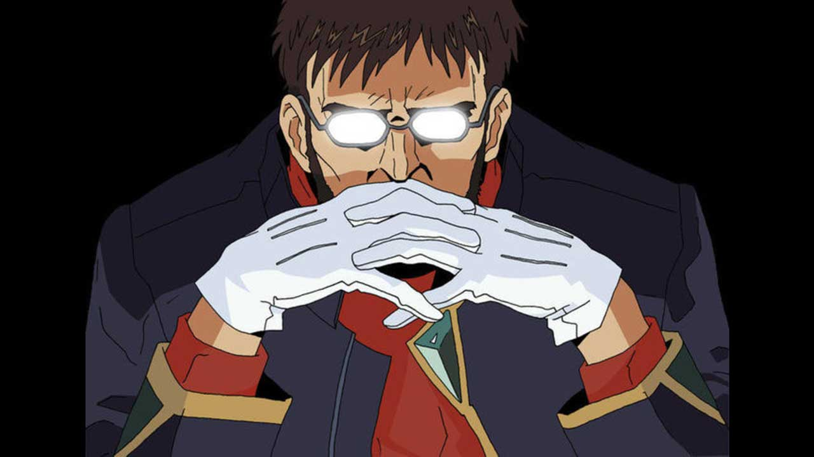
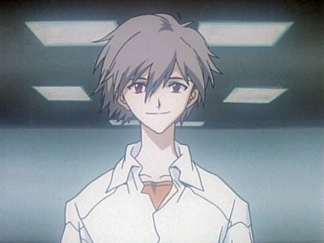
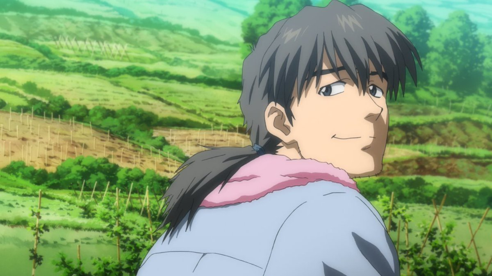
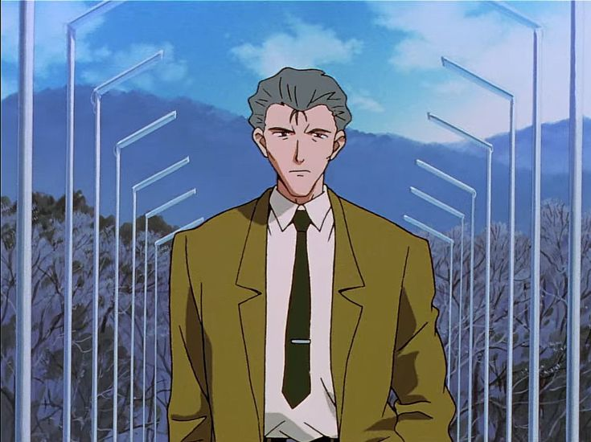

Shinji Ikari:
Nosso protragonistaShinji e um estudante do colegial introvertido que tem certos problemas pscologicos como como depresão, e insegura, tais características se devem a perca de sua mãe e abandono por parte de seu pai. Depois de muito tempo sendo criado por tios o Shinjie finalmente se encontra com seu pai mas, o mesmo apenas tinha interesse em seu filho para ser o piloto do EVA unidade 01.
No anime o Shinji acaba por sendo o princial responsável por causar o Terceiro impacto, além de lutar contra os Anjos ele precisa lidar com dilemas de sua vida pessoal o que acaba acaretando nos destinos da NERV e consequentemente da humanidade.
Asuka Langlev Soryu
Pilota da Unidade 02 Asuka e uma das personagens dentre as crianças escolhidas com a maior formação acadêmica, tendo estudado na Alemanha e sendo uma prodígio combatendo os Anjos. No decorrer dos episódios vemos sua personalidade forte e competitiva, que por sua vez entra em choque com a do Shinji quando os dois são forçados a morarem na mesma casa juntos da Misato Katsuragi.
Apessar de sua boa reputação Asuka possui traumas de infância severos, relacionados ao estado de demencia de sua mãe que precisou ser internada, o que por sua vez acaretou na personagem uma busca por atenção e vaçidação.
Rei Ayanami
Condutora da Unidade 00, Rei é uma garota misteriosa e de poucas palavras, sendo extremamente reservada e quase sempre mantendo uma expressão fria. Ela parece ter uma conexão especial com Gendo Ikari, seguindo suas ordens sem questionar. No entanto, ao longo da série, Rei começa a desenvolver uma maior independência e até demonstra emoções sutis, especialmente em relação a Shinji.
Apesar de sua aparência frágil, Rei esconde uma origem complexa, sendo uma peça-chave nos planos da NERV e dos segredos envolvendo os EVAs.
Misato Katsuragi
Misato é a chefe de operações da NERV e responsável por coordenar as batalhas contra os Anjos. Apesar de sua postura séria e competente no trabalho, fora dele, ela tem uma personalidade descontraída e até desleixada, sendo apresiadora de bebidas alcoólicas, hábito esse que tem com frequência.
Por trás de sua atitude extrovertida, Misato carrega traumas profundos devido à morte de seu pai durante o Segundo Impacto, o que moldou sua visão sobre a vida e seus relacionamentos. Seu desejo de vingança contra os Anjos e sua busca por significado em meio ao caos a tornam uma personagem complexa e crucial para o desenrolar da trama.
No anime a Misato acaba por convidar o Shinji para morar em sua casa gerando assim os momoemtos cômicos, além do Shinji ela acaba chamando a Asuka para morar junto.
Gendo Ikari
Frio e calculista, Gendo é o comandante da NERV e pai de Shinji. Obcecado por seus próprios planos e pelo Projeto de Instrumentalidade Humana, ele manipula os eventos ao seu favor, demonstrando pouca consideração por qualquer um, incluindo seu próprio filho. Seu comportamento distante e suas ações controversas fazem dele um dos personagens mais enigmáticos e temidos da série.
Kaworu Nagisa
Misterioso e carismático, Kaworu aparece nos momentos finais da série como sendo a Quinta Criança e piloto provisório da Unidade 02. Sua personalidade gentil e serena rapidamente estabelece um vínculo com Shinji, tornando-se um dos poucos a demonstrar afeto genuíno pelo protagonista. No entanto, sua verdadeira identidade como um dos revela um grande dilema, colocando Shinji em uma posição difícil.
Ryoji Kaji
Agente duplo, Kaji trabalha tanto para a NERV quanto para a SEELE, enquanto secretamente busca descobrir a verdade por trás dos experimentos e segredos envolvendo os EVAs e o Projeto de Instrumentalidade Humana. Além disso, tem um histórico romântico com Misato Katsuragi, com quem mantém uma relação complicada. Seu charme e comportamento descontraído escondem um homem astuto e determinado, cuja busca pela verdade acaba lhe custando caro.
Ritsuko Akagi
Cientista-chefe da NERV e responsável pelo desenvolvimento e manutenção dos EVAs, Ritsuko é uma mulher altamente inteligente, mas emocionalmente fragilizada por seu passado. Filha de Naoko Akagi, uma das criadoras do sistema MAGI, Ritsuko vive à sombra da mãe e possui uma relação conturbada com Gendo Ikari, o que a leva a tomar decisões impulsivas e até autodestrutivas.

Kozo Fuyutsuki
Subcomandante da NERV e braço direito de Gendo Ikari, Fuyutsuki é um homem experiente e um dos poucos que conhece os segredos do Projeto de Instrumentalidade. No passado, foi professor de Yui Ikari, mãe de Shinji, e guarda certo ressentimento por Gendo ter tomado controle dos projetos da NERV.
